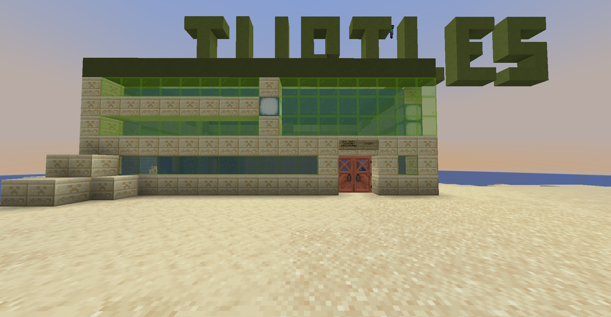

Dogui Heavy Industries Incorporated
Dogui Heavy Industries Incorporated¹ (DHI Inc.) is a fictional Horilandese company. Its main headquarters are located in Fucking, the capital city of Horiland.
The company was founded in June 2024 as Dogui Heavy Coding Industries, with its first part of the name inheriting from Dogui, the name of Horibyte’s dog plushie which at the time was the logo of StuffyXP. Its first mention was on a message on a Discord Server in which Horibyte was in, which had attached the Stuffy Vlogs background from the time.
In July 2024, the company was renamed Dogui Heavy Industries Limited, having its own motto:
When the tables suddenly turn at the Dogui Heavy Industries Headquarters, it’s when you know there’s a certified Stuffy Moment
As of March 2025, Dogui Heavy Industries has changed from a Limited Company to a Incorporation, hence its current name. It is one of the most profitable businesses founded and ran in Horiland. It has been said that works made by DHI’s employees are prone to Horibyte Moments.

Headquarters of DHI Inc. in Fucking, Horiland
Subsidiaries
DHI Turtles
DHI Turtles Inc. (fully known as Dogui Heavy Industries Limited: Turtle Research & Observatory Center LLC) is a subsidiary of Dogui Heavy Industries Incorporated, its main goal is to rescue, preserve and study Horilandese turtles.

Headquarters of DHI Turtles in Fucking, Horiland
DHI Movies
DHI Movies Corp. (fully known as Dogui Heavy Industries Limited: Movie Film-making & Studio Corporation) is a Horilandese film-making company, subsidiary of Dogui Heavy Industries Incorporated. The company’s headquarters are located in Redlock, Ture, Horiland.
DHI Movies Corp. has released various films related to the Horiland country, honorable filmography are “Ture: The Nuke of the ‘25” and its prequel “Jell: a Ture of the Past”, both recieving a box office amount of H. 459M separately.
¹↑ Formerly known as Dogui Heavy Industries Limited (DHI Ltd.) and Dogui Heavy Coding Industries (DHCI).